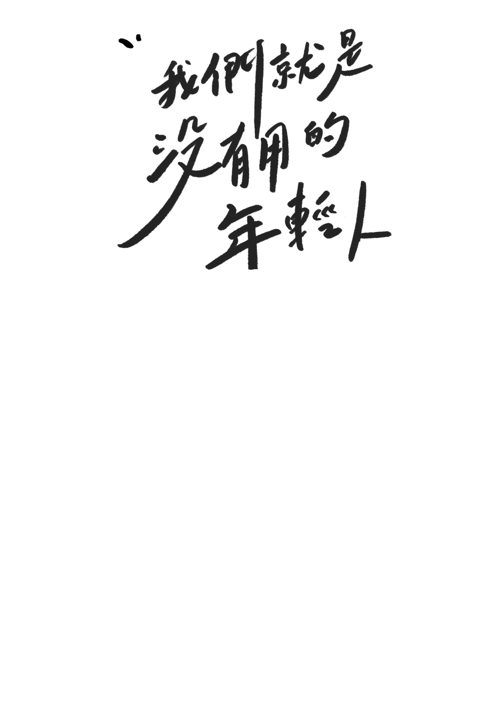
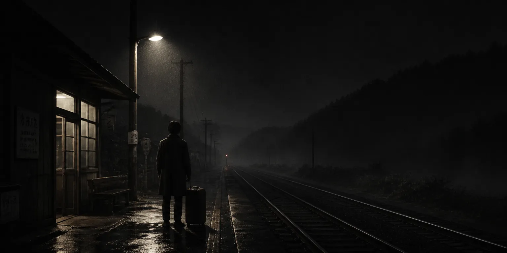
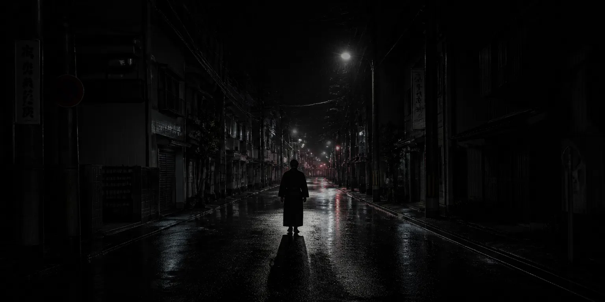
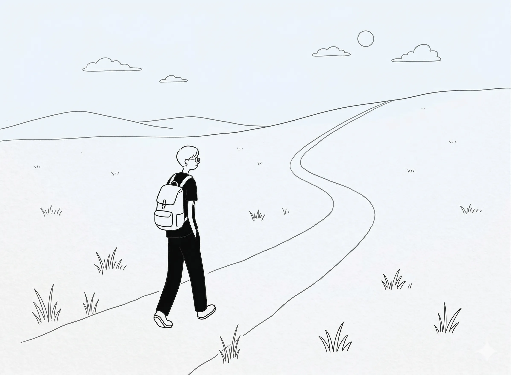
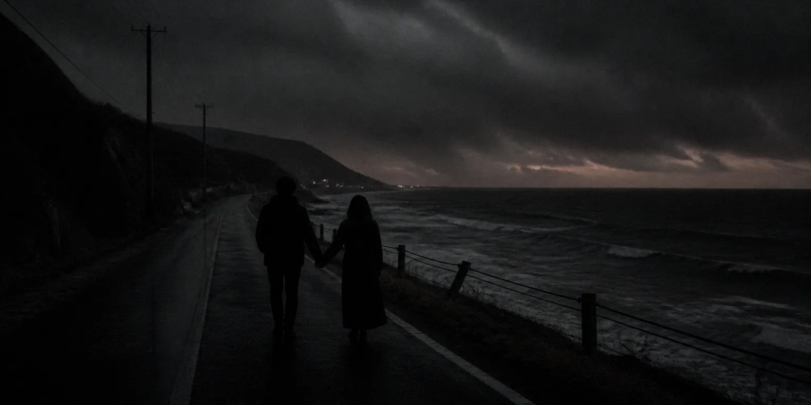
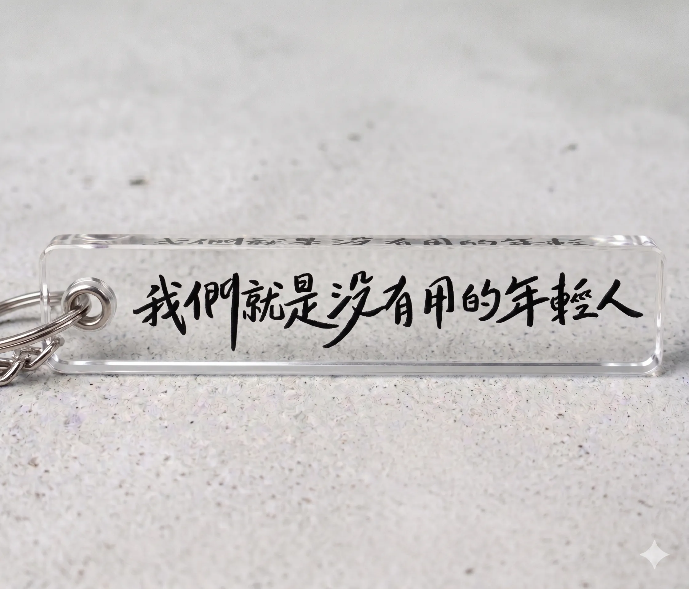
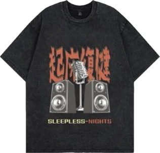

WE ARE JUST USELESS YOUTH.
SCROLL DOWN

「不要讓生存，成為你存在於這個世界的唯一理由。」
為了在社會中存活是有代價的，這僅僅是為了換取一刻喘息的空間
站在房間靠近門的地方，背對著門外，以被迫的姿態迎接未知。破碎的鏡子映射著滄桑的面容，彷彿曾經勇敢地掙扎過一樣。在決定要踏出門外的一刻，伴隨著遺憾與徒勞無功的感傷，啟動了倒數的時鐘。

這首歌主要講述自己跟家人離別，去遙遠的地方求學。當中帶有十分不捨和難過的心情。每個人在成長的階段，總會有一些時候要跟自己的家庭告別一陣的時光。身為父母身處在遠方，總會思念著自己的孩子，祈求孩子的安好和保佑他們。作為持續成長的大人，即使已經孤身一人獨自前進，也不要忘記曾經身為孩子的自己也幸福快樂過。

成長總伴隨著代價。曾幾何時，身邊只剩下同事。曾幾何時，飯桌上只剩下認識的人。曾經何時，在路上只剩下自己的影子。捨棄的到底是什麼？

要好好珍惜所有能喘息的瞬間
受到現實的打擊下體無完膚，這首歌描述了一種暫時性的逃避——那些不想面對現實的人們，正試圖在記憶中尋找片刻的安寧。

白天的妥協與夜晚的放肆。白天的妥協，是戴上社會化面具、精準執行體制生存法則的客觀展現；而當夜幕降臨，被壓抑的真實自我則以「放肆」的形式全面爆發。成為雙面人並非出於道德上的虛偽，而是為了在殘酷的現實巨浪中維持心理平衡。

躺在床上無所事事，感受理想喪失後的空虛。這首歌探討了在身份認同、經濟壓力與理想變現之間的掙扎，求問著在這個充斥著分歧的世界裡，是否真的能有所不同。


即便外在世界再糟糕、道路再多棘手，只要能找到屬於自己的避風港，一切都是值得的。
認知到自己的渺小並非錯誤，而是一種覺醒。當我們懂得認清自我並開始為真正渴求的事物爭取時，那份渺小將轉化為正確前行的動力。
即便未來的道路佈滿荊棘，甚至被迫在震動的地面上繼續往前，我們仍相信相遇的瞬間。雖然曾經的願望被埋葬，但這份連結將成為彼此在黑暗街道上的避風塘。

即使世界很糟糕，還是會有一些值得被珍惜的事物。儘管世界糟糕如荒漠，我們仍要緊握命運，不再沈默。即使在生命走到盡頭、眼淚掉落的時刻，也要帶著執著與溫柔與珍惜的事物一同走下去，直到最後一分鐘。

「不要讓生存，成為你存在於這個世界的唯一理由。世上還有值得珍惜的事物，好好把握、好好珍惜、好好活著。」

第二張還在做，第一張已經在各大串流上。想知道這群人在講什麼，從這裡開始聽。
「也許我們就是沒有用的年輕人，但我們也可以活出自己想要的樣子。」
十二首原創歌曲，分成三個主題：現在的迷惘、過去的遺憾、未來的期許。 第一張是拒絕長大的那一面，第二張《如何長大又沒變壞》回頭處理同一群人後來怎麼了。
將專輯的精神化為隨身攜帶的物件

歌詞截取，音樂播放器介面設計

專輯同名手寫字，透明壓克力材質

黑底白字刺繡，手寫字復刻

周邊尚未開賣。開賣與發行消息都會先發在 Threads，追蹤就不會錯過。
開賣時通知我